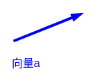
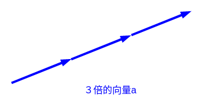
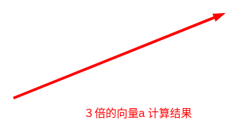

向量的缩放
基本概念¶
向量的缩放，有的时候也称之为 向量的数乘.
就是用 一个数字去乘以一个向量 。
数乘的结果还是一个向量。
代数表示¶
例如我们表示一个 向量的缩放，我们可以:
Note
以上３是一个数字，代表向量需要缩放的倍数。
\vec {a}是一个向量，当然向量有大小和方向。
几何意义¶
例如以下是\vec {a}向量:

那么3 \cdot \vec {a} 为:

计算结果为:

特点是:
-
向量的长度按照一定比例缩放
-
方向和原来方向平行(同向或方向)
坐标计算¶
向量\vec {a}如下:
现在希望计算2 \cdot \vec {a} 。
我们计算过程如下:
公理总结2D¶
已知一个向量\vec {v},它的坐标表示为 (x, y) .现在需要将它缩放λ倍.
计算缩放后的坐标结果:
公理总结3D¶
已知一个向量\vec {v},它的坐标表示为 (x, y, z) .现在需要将它缩放λ倍.
计算缩放后的坐标结果:
单位向量¶
单位向量表示¶
- x轴的单位向量表示(1, 0, 0)
- y轴的单位向量表示(0, 1, 0)
- z轴的单位向量表示(0, 0, 1)
缩放的意义¶
例如，向量\vec {a}如下:
由向量的加法我们可以知道，任何一个向量都可以拆分成多个向量的和。
那么在这里我们将\vec{a}拆分为两个向量的和：
向量是有方向有大小的，此时，我赋予\vec{b}和\vec{c}特殊的方向，他们的值自然就是 固定的。
正好这两个向量是垂直的，一个是沿着x轴，一个沿着y轴。
我们按照缩放的原则，将\vec {b} 和\vec {c}进行缩放:
其中，(1,0)可以表示为x轴方向的单位向量\vec {i}
其中，(0,1)可以表示为y轴方向的单位向量\vec {j}
那么:
则:
向量a的值我(3, 4)，我们最终用上面推导来描述向量a有什么好处呢？
\vec{a}的值(3,4)是一个向量的描述，而 3 \cdot \vec {i}将向量拆成了数和单位向量，在后面运算过程中，都会是一些数的运算，而不是向量的整体运算。还有就是，将一个向量差分为垂直的两个向量，在以后运算过程中，单位向量都会抵消，最终变为数的运算，简化了运算逻辑。
代码描述缩放¶
二维¶
import numpy as np
from math import pow, sqrt
a = np.array([3, 6])
# 单位向量
# 2d
# x
x = np.array([1, 0])
# y
y = np.array([0, 1])
a = 3 * x + 6 * y
Note
# 向量 ->加法拆解为 2个向量的和, 拆出的向量是两两垂直
b = np.array([3, 0])
c = np.array([0, 6])
a = b + c
# 多个向量-> 拆解为 数* 单位向量
b = 3 * np.array([1, 0])
c = 6 * np.array([0, 1])
三维¶
import numpy as np
from math import pow, sqrt
# 3d
# x
x = np.array([1, 0, 0])
# y
y = np.array([0, 1, 0])
# z
z = np.array([0, 0, 1])
a = np.array([3, 6, 4])
a = 3 * x + 6 * y + 4 * z